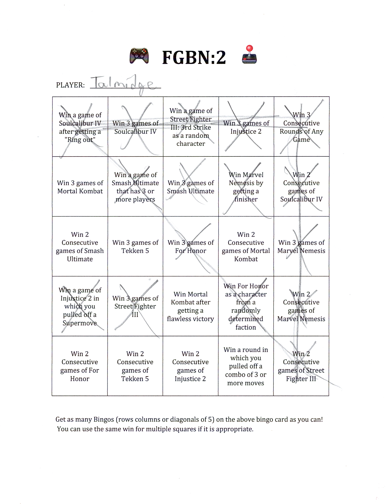
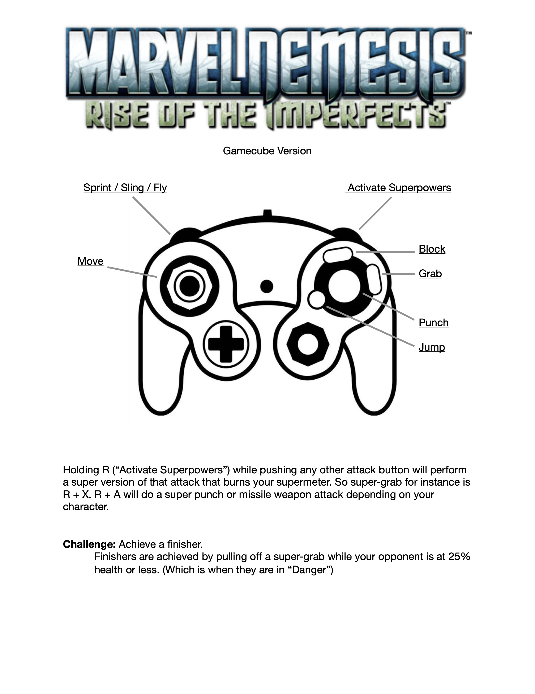

FIGHTING GAME
BINGO NIGHT
The Bingo Card
The core of an FGBN is the bingo card. It is in fact nothing more than weak excuse to put 8 figthing games together, but it is necesary nontheless.
Each card will have 25 squares. If at all possible, try and give each player or team a unique arrangement of the 25 squares, but be sure to give every player the same 25 squares. The random arrangment helps keep all games being played, as all of them will be in important locations, but the regularity of the content of the squares provides balance and fair play.
Just like in actual bingo, a bingo is a line of 5 completed tiles, vertical horizontal or diagonal. The same square may be used in up to 3 bingos, one horixontal, one verticle, and one diagonal, if placed in a position where there are such intersecting lines.

The Game List
Traditionally a FGBN contains 8 seperate games. These should all be fighting games, but if possible, taken from multiple different sub-genres of fighting. There should be some traditional combo-based titles like Mortal Kombat or Street Fighter, but also a platform fighter or two, maybe a couple games with full 3d movement, and maybe a game or two that is technically a fighting game but strays from the usual format.
Optimally, when invited, a player should be given the list of games included so that they can practice if they so desire. They won't -- they never do, but if you have them a list they don't have an excuse to fall back on when they lose 😉.
The Bingo Card Squares
Each game, assuming there is 8 games, has three squares of the card dedicated to it. They typically are:
| Win 3 rounds of __________ | Win 2 consequitive rounds of __________ | Win a challenge round of __________ |
Should you have more than 8 games the best to drop is 2 consequitive rounds, as unless you made the challenge extremely difficult this is actually the hardest square.
The 25th square is usually occupied with Win 3 consequitive rounds of any game. It's best not too have too many general challenges like this, as it lets a player too strongly leverage a game their good at for advantage. Having some, however, is beneficial as players will have more fun if allowed to leverage their particular skills a little bit.
The Setup
Getting 8 machines in place with controllers is no easy feat. This is an event that must be hosted by multiple people. A dorm room or basement is OK though, as people seem not to mind gaming in odd locations.
Laptops should be your preference, due to avoiding the need for a seperate monitor. We've transported all-in-one desktops as well. Consoles are sometimes necesary to use as well, simply due to having the games on them, but seperate monitors will need to be procured.
Controller number may be of concern. Frequently people will have enough high quality controllers, as most console owners own more than one, however if need be a cheap controller purchased from somewhere like AliExpress (no affiliation) will subsidize the count just fine. People tend not to mind in the chaos, especially if its only one or two games. SNES style controllers are often best to get cheap, if the game is simple enough to use them, as the D-pads and buttons are of higher quality than cheap joysticks.
Since lower-end hardware will most likely be employed it's important to have a game or two that doesn't demand much of the operating system. For lower-end windows systems Steam has the Street Fighter 30th Anniversary Collection, which contains all of the old Street Fighter games from the original up until the last iteration of Street Fighter III. Even the most demanding title doesn't require much from your PC. GOG (another game distribution platform, but one with DRM free releases and more old games) also has all of the oldest Mortal Kombat games for just a few bucks. They're DOSBox based ports, but they support Windows, as well as Linux and Macos, and every fighting game enjoyer likes a good old Mortal Kombat game. They also play well with cheap SNES controllers! Emulation of the Dreamcast/PS1 and earlier consoles is also just about perfect nowadays, and you can even avoid the legal questions of downloading old ROMs by playing them online, romless, in a browser, provided you have an internet connection.

The Information Card
The information card serves two purposes:
1. Inform the player of where each game is, i.e., what each station contains.
2. Give the player basic information on how to play each game.
Usually an 8.5 x 11 sheet of printed paper, tacked to some cardboard and kept next to each machine, in plain sight. Keep the title of the game right on top, front and center. You can even find PNGs of the official titles from wiki's for a nice, polished feel. You should then have a drawing then of your controller type, a description of the challenge square for that game, and any salient tips and tricks that an experienced player in the group might have for the newer players.
And that should be just about everything needed to run a sucessful Fighting Game Bingo Night. Godspeed and good-fun to you.